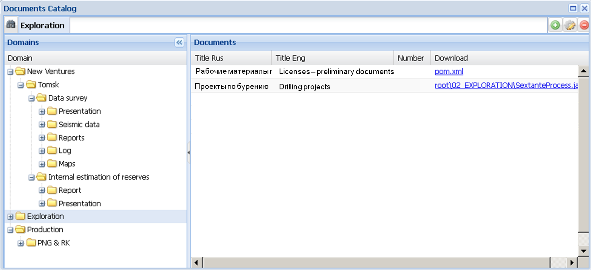
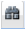
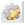

Команда Documents Catalog
Команда Documents Catalog (Каталог документов) используется для вывода в специальном окне Documents Catalog структурированной информации о местоположении всех документов, имеющихся в хранилище.
Окно состоит из двух частей. В левой части - Domains - показан каталог размещения документов в виде стандартной иерархической файловой структуры. В правой части - Documents – приведён список всех документов, содержащихся в папке любого уровня, отмеченной в левой части. Documents содержит четыре колонки с кратким (Short Title) и полным (Full Title) названием документа, его номером (Number) и гиперссылкой, позволяющей получить к нему доступ (Download).

Каталоговая форма хранилища АСХД, представленная в левой части окна, позволяет пользователю самостоятельно осуществлять поиск документов непосредственно в файловой структуре на сервере.
С документами, перечисленными в правой части окна, можно совершать те же операции, что и с документами найденными командой Find (см. Простой поиск): редактирование метаданных, редактирование документа, скачивание документа на локальный компьютер.
Над полем Domains и над полем Documents находятся вспомогательные окошки, соответственно, для поиска и добавления/удаления документов.
Левое окошко служит для поиска документов по слову или словосочетанию, аналогично простому поиску.
Правое окошко служит для добавления (пиктограмма ) или удаления (пиктограмма ) документа. При выборе опции добавления Приложение раскроет интерфейс New Document (карточка метаданных документа) (см. Register), при выборе опции удаления – удалит документ, предварительно потребовав подтверждения от пользователя.